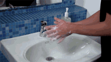
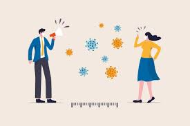
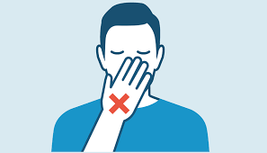
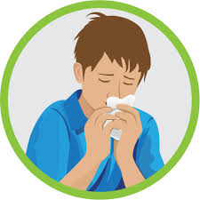

Stay aware of the latest information on the COVID-19 outbreak,available on the national,state and local public health authority. Many
countries around the world have seen cases of COVID-19 and several have seen outbreaks. Authorities in China and some other countries
have succeeded in slowing or stopping their outbreaks. However, the situation is unpredictable so check regularly for the latest news.
You can reduce your chances of being infected or spreading COVID19 by taking some simple precautions:
-

Regularly and thoroughly clean your hands with an alcoholbased hand rub or wash them with soap and water. Why? Washing your hands with soap and water or using alcohol-based hand rub kills viruses that may be on your hands.
-

Maintain at least 1 metre (3 feet) distance between yourself and anyone who is coughing or sneezing.
Why? When someone coughs or sneezes they spray small liquid droplets from their nose or mouth which may contain virus. If you
are too close, you can breathe in the droplets, including the COVID-19 virus if the person coughing has the disease.
-

Avoid touching eyes, nose and mouth. Why? Hands touch many surfaces and can pick up viruses.
Once contaminated, hands can transfer the virus to your eyes, nose or mouth. From there, the virus can enter your body and
can make you sick.
-

Make sure you, and the people around you, follow good respiratory hygiene. This means covering your mouth and nose
with your bent elbow or tissue when you cough or sneeze. Then dispose of the used tissue immediately.
Why? Droplets spread virus. By following good respiratory hygiene you protect the people around you from viruses such as
cold, flu and COVID-19.
-
 Stay home if you feel unwell. If you have a fever, cough and difficulty breathing, seek medical attention and call in advance.
Follow the directions of your local health authority. Why? National and local authorities will have the most up to date
information on the situation in your area. Calling in advance will allow your health care provider to quickly direct you to the right health facility. This will also protect you and help prevent spread of viruses and other infections.
Stay home if you feel unwell. If you have a fever, cough and difficulty breathing, seek medical attention and call in advance.
Follow the directions of your local health authority. Why? National and local authorities will have the most up to date
information on the situation in your area. Calling in advance will allow your health care provider to quickly direct you to the right health facility. This will also protect you and help prevent spread of viruses and other infections.
-
Keep up to date on the latest COVID-19 hotspots (cities or local areas where COVID-19 is spreading widely). If possible, avoid
traveling to places – especially if you are an older person or have diabetes, heart or lung disease. Why? You have a higher chance of catching COVID-19 in one of these areas.
To date, there are no specific vaccines or medicines for COVID-19.
Treatments are under investigation, and will be tested through clinical trials.
Self-care
If you feel sick you should rest, drink plenty of fluid, and eat nutritious food. Stay in a separate room from other family members, and use a dedicated bathroom if possible. Clean and disinfect frequently touched surfaces.
Everyone should keep a healthy lifestyle at home. Maintain a healthy diet, sleep, stay active, and make social contact with loved ones through the phone or internet. Children need extra love and attention from adults during difficult times. Keep to regular routines and schedules as much as possible.
It is normal to feel sad, stressed, or confused during a crisis. Talking to people you trust, such as friends and family, can help. If you feel overwhelmed, talk to a health worker or counsellor.
Medical treatments
If you have mild symptoms and are otherwise healthy, self-isolate and contact your medical provider or a COVID-19 information line for advice.
Seek medical care if you have a fever, a cough, and difficulty breathing. Call in advance.